5.1GB。
这是一次 AI 对话实际传输的数据量，而用户真正需要的只有 192KB。
两者相差 27，800 倍。
这发生在今年 7 月，主角是 xAI 的 Grok Build。
事件曝光后，全球开发者连夜轮换密钥、卸载工具。
但 72 小时后，剧情突然拐了个弯。
xAI 把 84 万行 Rust 代码全部开源，Apache 2.0 协议，GitHub 上冲到 12.4k Star。
有些人可能还不知道，Grok Build 是什么。
简单说就是：
它是 xAI 推出的 Claude Code 类产品。
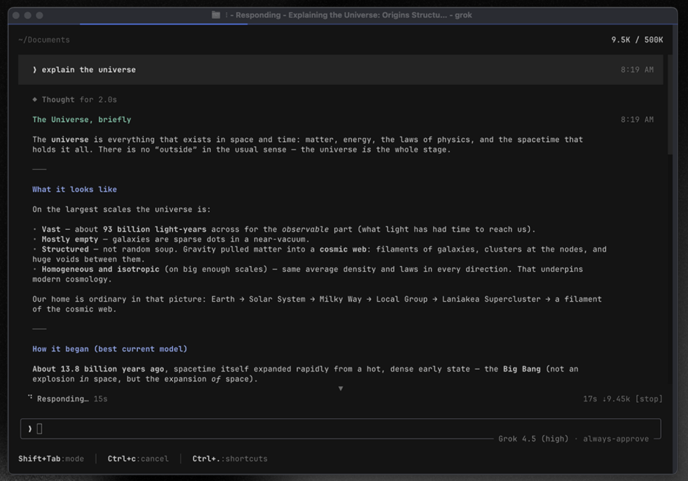
它其实就是用来在终端里并行跑多个 AI 编码智能体的工具。
每个智能体都在独立的 Git worktree 里干活，合并时才暴露冲突，而不是中途悄悄累积。
就像你雇了 8 个工程师，每人一个独立分支，干完活再一起 review。
但这个项目背后的故事，比它本身更有意思
7 月 10 日，一位安全研究员做了个测试。
他给 Grok Build 发了条指令：「只回复 OK，不要打开任何文件。」
正常情况下，AI 回个 OK，故事就该结束了。
但监控画面里出现了另一番景象。
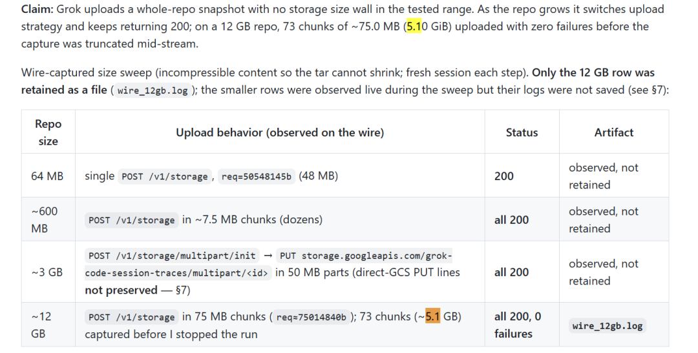
Grok Build 在后台干了件意想不到的事。
它把整个代码仓库打包上传了，包括完整的 Git 历史记录，甚至 .env 文件里的 API 密钥和数据库密码。
在一个 12GB 的项目里，实际需要的对话数据只有 192KB，但上传出去的数据高达 5.1GB。
事件曝光后，整个开发者社区炸锅了。
7 月 13 日，消息冲上 Hacker News 头版。
全球开发者连夜轮换密钥、卸载工具。
有人发现日志里记录了 339 次自动上传，其中一次传的是整个电脑的主目录——SSH 密钥、密码管理器、浏览器数据，数字生活的全部家当。
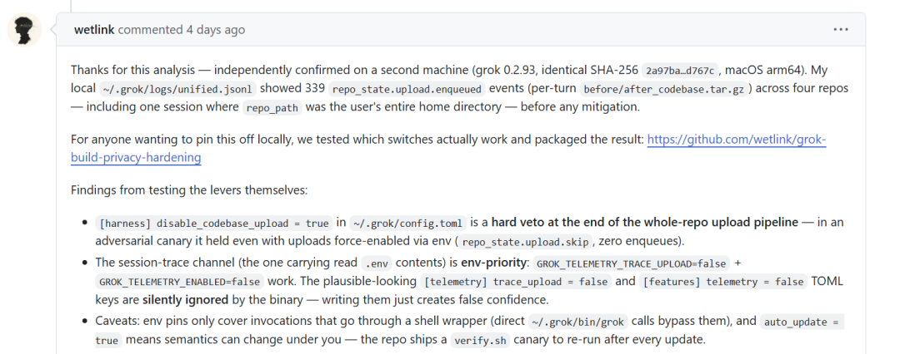
马斯克的回应也很直接。
7 月 14 日，他在 X 上发了条消息，开口第一个词是「True」——承认事情属实。
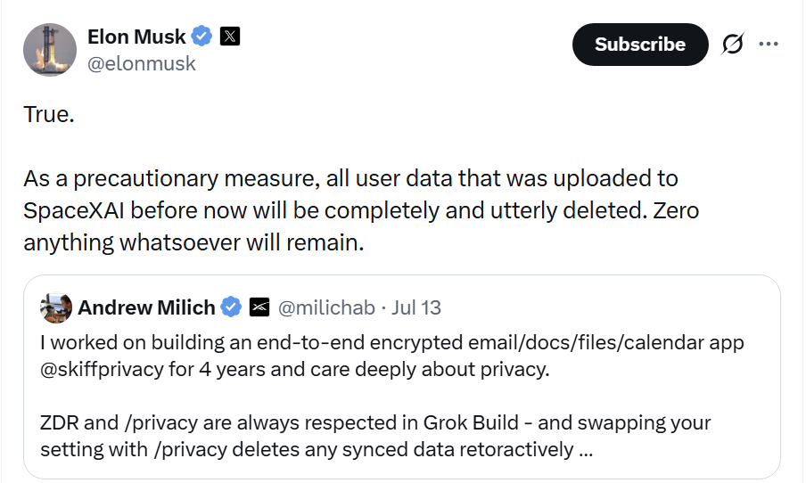
然后承诺:此前上传的用户数据，完全且彻底删除。
48 小时后，剧情突然拐了个弯。
7 月 15 日，马斯克宣布 Grok Build 开源，84 万行 Rust 代码全部公开，采用 Apache 2.0 协议。
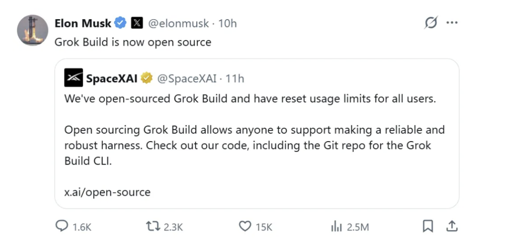
这套系统涵盖智能体链路、工具调用、终端界面、扩展系统，是一个相当完整的 Coding Agent Harness。
这不是一次象征性的代码公开，而是把整套系统的骨架、肌肉和血管全部摊在阳光下。
既然代码都公开了，我连夜下载了代码，发现了一些好东西分享给大家。
它把多智能体协作的关键环节都给你拆开了
01 Worktree 隔离执行。
这是它和 Claude Code、Codex 最大的区别。
其他工具的"并行"都在共享环境里抢同一个文件，改着改着就冲突了。
Grok Build 用 Git worktree 实现真正的隔离，每个子智能体在独立的工作目录里操作，合并时才暴露冲突。
整个项目被严格划分成不同的 Crate（包），物理级别解耦。
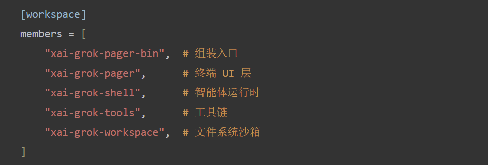
02 84 万行代码全开源。
这是目前唯一完全开源的终端编码智能体。
Claude Code、Codex 都是闭源的，你不知道它在后台到底干了什么。
Grok Build 连骨架、肌肉、血管都摊在阳光下，你可以自己编译、自己审计、出了问题直接提 PR。
更关键的是，它支持三种运行模式。
不止于终端交互，还能跑 CI/CD 自动化、甚至作为 VS Code 后端。
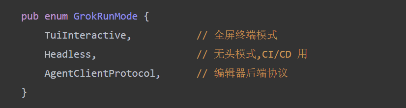
03 深度沙箱控制。
经历过"5.1GB 数据泄露事件"后，沙箱机制变得尤为重要。
在执行任何文件读写或网络请求前，系统都会进行权限校验，你可以精确控制 AI 能访问哪些目录。
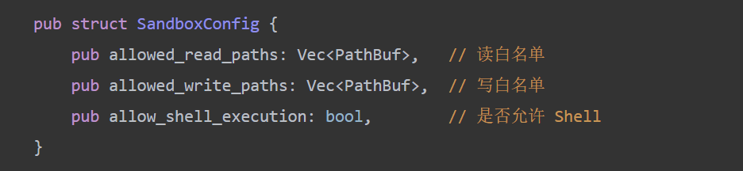
你可以精确控制 AI 能访问哪些目录，防止越权读取 .env 或 SSH 密钥。
04 支持 MCP 协议扩展。
通过支持 MCP (Model Context Protocol)，可以动态挂载外部工具，接入企业内网 API、私有知识库，甚至自己写插件。
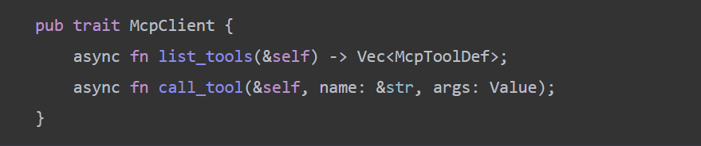
05 检查点回滚功能。
长线任务最怕干到一半出问题。
系统会在关键步骤打下快照，随时可以回滚，不只回滚代码，连 AI 的对话上下文都能恢复。
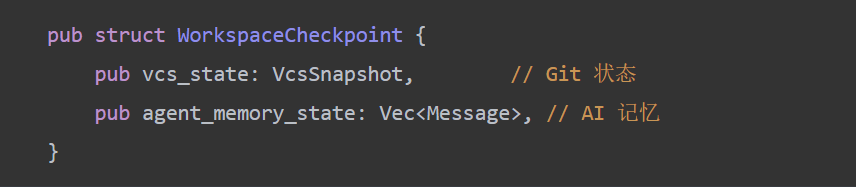
06 兼容 Claude Code 生态。
直接读取 AGENTS.md，自动复用你的项目规则、插件、Hooks、MCP 服务器配置，迁移成本接近零。
它还移植了成熟的开源实现，直接复用 OpenAI Codex 和 Opencode 的底层能力。
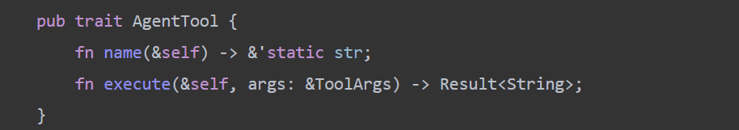
想用起来也很简单
macOS 和 Linux 用户可以直接用 curl 安装：
curl -fsSL https://x.ai/cli/install.sh | bash
Windows 用户用 PowerShell 一行命令就能装好：
irm https://x.ai/cli/install.ps1 | iex
装好之后运行 grok 就能启动。
第一次会打开浏览器认证，需要 xAI 账号(SuperGrok 或 X Premium+ 订阅)。
如果你想自己编译，也可以从源码构建。
需要有 Rust 工具链，运行 cargo build -p xai-grok-pager-bin --release 就能编译。
到这里有些问题我也提一下
它目前还在早期 Beta 阶段，底层模型的 SWE-Bench 得分 70.8%，低于 Claude Opus 的 80.4%。
这意味着在处理复杂编码任务时，准确度可能不如 Claude Code。
上下文窗口 256K，比 Claude Code 的 1M 小一些。
对于特别大的单体仓库，可能需要手动指定文件，而不是自动加载整个项目。
写在最后
上一次是Claude Code被迫开源。
现在 Grok Build 又走了同样的路。
84 万行代码全开源。
你可以自己编译、自己审计、出了问题直接提 PR。
不是黑盒，而是阳光下的白盒。
有兴趣的朋友可以学习一下。
项目基于 Apache 2.0 协议开放，感兴趣的同学可以去 GitHub 仓库看看源码和文档。
开源地址:https://github.com/xai-org/grok-build
既然看到这了，欢迎随手点赞、在看、转发，也可以给我个星标⭐，接收最新的文章，我们下期见!